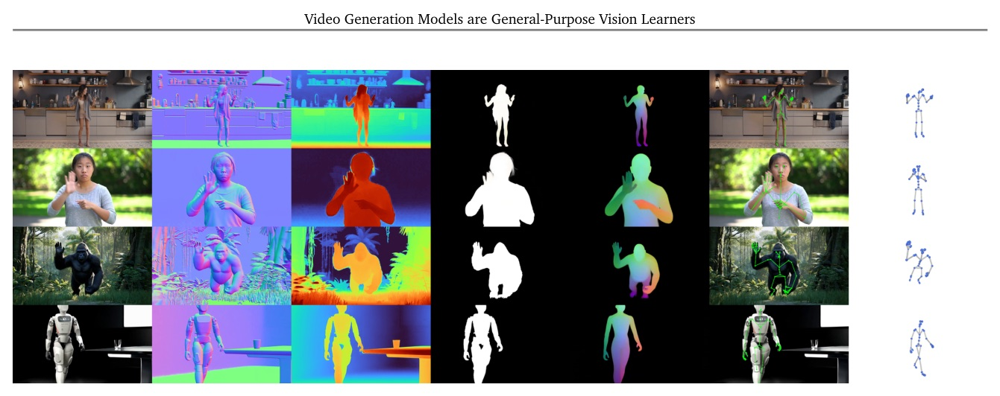
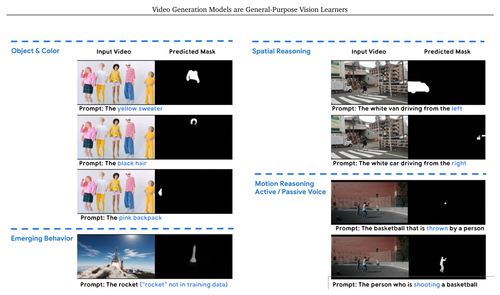
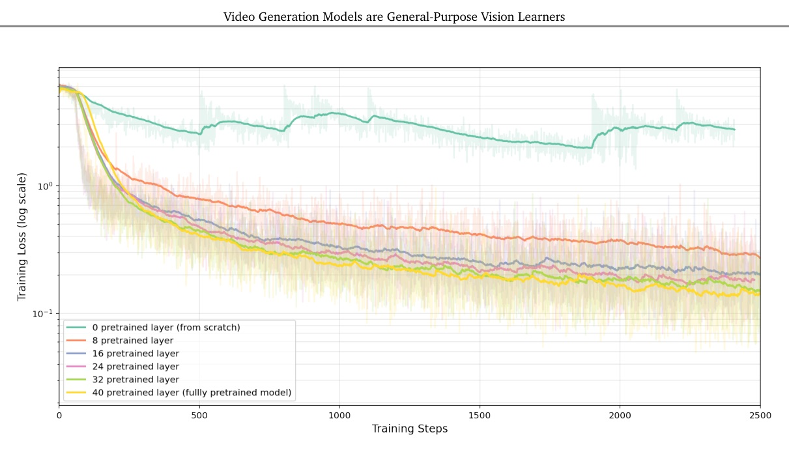
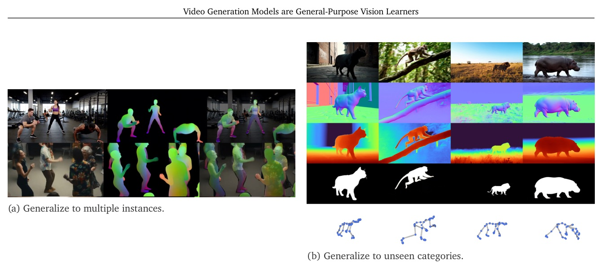

GenCeption: turning a pretrained text-to-video diffusion transformer into a prompt-steered, one-pass perception model.

Video generation can be the pretraining objective for general-purpose perception.
Keep the text-to-video backbone and its priors; replace 50-step sampling with one prompt-conditioned forward pass.
| Model | Input | Runtime | Speed | VRAM |
|---|---|---|---|---|
| GenCeption 1.3B | 81f, 480x832 | 5.92 s | 13.6 FPS | 15.3 GB |
| GenCeption 14B | 81f, 480x832 | 10.03 s | 8.0 FPS | 42.8 GB |
| Task / benchmark | Metric | Generalist-L | Specialist-L |
|---|---|---|---|
| Normals / Sintel | mAE down | 29.3 | 29.7 |
| Camera / Sintel | ATE down | 0.156 | 0.130 |
| Matting / VideoMatte | MSE down | 0.0010 | 0.0027 |
| Referring seg. / Ref-DAVIS | J&F up | 75.8 | 76.4 |

The important prior is not just video data; it is the generative diffusion objective plus a post-training format that does not fight the backbone.
Matched-data depth experiments place WAN 2.1 ahead of V-JEPA and VideoMAE v2; transferring more pretrained layers also improves performance.
| Pretraining backbone | Size | Avg AbsRel down | Avg delta-1 up |
|---|---|---|---|
| V-JEPA-H | 0.6B | 0.281 | 52.2 |
| VideoMAE v2-G | 1B | 0.154 | 66.9 |
| WAN 2.1-S | 1.3B | 0.122 | 85.8 |
| WAN 2.1-L | 14B | 0.093 | 90.7 |
| Model / data | Videos | Frames | Avg AbsRel down | Avg delta-1 up |
|---|---|---|---|---|
| WAN 2.1-L / 1 dataset | 7.5K | 0.9M | 0.093 | 90.7 |
| WAN 2.1-L / 4 datasets | 8.08K | 1.23M | 0.071 | 93.8 |
| VGGT-Omega (reported) | ~3M | ~600M | 0.067 | 95.2 |


“By repurposing iterative diffusion into a feed-forward architecture, GenCeption dynamically infers the intended modality in a single forward pass, steered by the text instruction.”
「將反覆的 diffusion 改成 feed-forward 架構後，模型由文字指令在一次前向傳播中決定並推論目標模態。」§1 p.2
“We advocate for projecting fundamentally visual tasks directly into the continuous pixel space—the native domain where pre-trained visual priors are best leveraged.”
「作者主張把本質上視覺的任務投影到連續像素空間，讓預訓練視覺先驗在它最原生的表徵域裡工作。」§3.3 p.7
GenCeption argues that video diffusion pretraining can provide both world priors and a scalable interface for generalist visual perception.